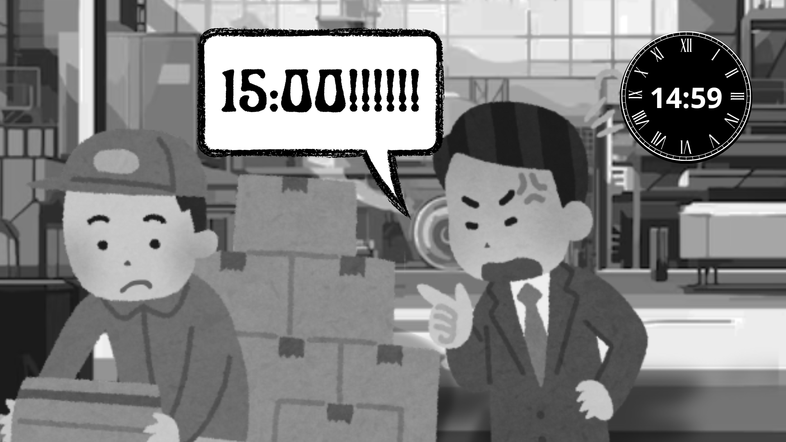

Situação 2:

Em uma empresa, o gestor utiliza uma abordagem tradicional de administração, onde os colaboradores são vistos principalmente como recursos a serem utilizados de acordo com a demanda. Ele impõe metas rígidas e pressão constante para o cumprimento de prazos, uma vez que a empresa demanda que uma meta seja batida todo dia, e eles não alcançarão essa meta caso os horários sejam alterados. Como você intervêm?
ㅤㅤㅤㅤ